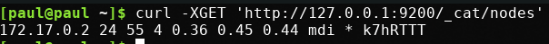
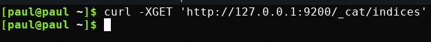

Walkthrough: Elasticsearch
Elasticsearch is a non-relational database. It stores information as documents, a collection of key-value pairs that describe the object. A document’s format is very similar to JSON.
Unlike a relational database, we will not use SQL to communicate with our data, instead we will be using HTTP Requests, and JSON to communicate with our data. It is a RESTful API and therefore we will predominately be using GET, POST, PUT, and DELETE HTTP methods, and will be receiving JSON as a response.
A non-relational database has certain advantages, and disadvantages in comparison to a relational database.
- Advantages:
- Fast search
- Full text search
- Real time search
- Fuzzy search
- Distributed workers
- Disadvantages:
- Data loss & data corruption
- Reindex for every document creation, or update
- Memory intensive
Throughout this class we will be leveraging Elasticsearch’s fast, full, and fuzzy searches, but will never use it as a primary datastore. We will be using it as a secondary datastore.
Getting Ready
To use Elasticsearch we need to first install it.
We will be running Elasticsearch as a docker container. You can check if you have docker installed with: $ docker -v, if it’s installed it will print out the version installed. Check out the Installation: Docker if you need to install docker.
After docker is installed you can check your containers with: $ docker ps -a, if you don’t have an elasticsearch container, you can get one by following the Docker Installation: Elasticsearch.
Elasticsearch Terms
Cluster - A collection of Nodes, that holds all the data, and manages Requests, and Responses.
Node - A single server inside the cluster. It stores pieces of the data, and performs indexing, and searching. The Node is the worker that performs the actions in Elasticsearch.
Index - A collection of documents that have somewhat similar characteristics.
Shard - A single piece of an index. It stores some documents, but not necessairly all the documents for a specific Index. The data of an Index is spread out amongst many Shards.
Replica - A copy of a shard. If a shard is corrupted, or goes offline, the Replica can be used to re-create the Shard, or can be used in the Shards place. A replica cannot be housed on the same Node as the Shard it was created from.
Document - A record of data. A basic unit of information that can be indexed.
Read more about these specific terms from the Elasticsearch documentation basic concepts.
Elasticsearch Basics
Now that we have Elasticsearch installed on our machines we can learn the basics. We will focus on CRUD functionality.
We will be passing JSON back and forth with Elasticsearch, and using HTTP as the means of communication.
To do this on Unix based systems we will use the cURL terminal tool.
From the terminal a cURL command looks like: $ curl -X<HTTP_VERB> '<URL>' -H 'Content-type:application/json' -d '<BODY>'
- Let’s break that command down:
- -X<HTTP_VERB>: The HTTP verb we want to use (GET, POST, PUT, DELETE)
- <URL>: The URL of the Elasticsearch cluster and the path of the index we are requesting
- -H: HTTP Header in this case we are setting the Content Type to application/json this allows us to include JSON with our request
- -d: The Body of the request in this case it’s where we would include our JSON
Let’s make a request to view data about our Elasticsearch cluster: $ curl -XGET 'http://127.0.0.1:9200/'

Another useful request is to the _cat endpoint. It gives us more information about how to query even more resources.
$ curl -XGET 'http://127.0.0.1:9200/_cat/'

Let’s check the nodes associated with this cluster: $ curl -XGET 'http://127.0.0.1:9200/_cat/nodes'

We have one node. The location of the node on my machine is 172.17.0.2, that happens to be the internal IP address of the docker container where my Elasticsearch cluster lives. Your IP Address will probably be different.
Now let’s check the indices associated with our cluster: $ curl -XGET 'http://127.0.0.1:9200/_cat/indices'.

We don’t have any! We will have to create one.
Create
Before we create documents, we will have to create an index for our documents. Let’s create a new index called teams.
PUT /teams
curl -XPUT 127.0.0.1:9200/teams -H 'Content-Type: application/json' -d '
{
"settings": {
"index": {
"number_of_shards": 2,
"number_of_replicas": 1
}
}
}'
When you add a document to an index it’s called indexing a document. Indexing is slightly different than creating a record in a relational database. Indexing creates the document, and makes it fully searchable, which is more memory intensive, and slower than simply creating a record in a database. This allows the document in Elasticsearch to be searched fully, and very quickly. Elasticsearch is Near Realtime which means when we index a new document, it is searchable almost immediately.
Now let’s index some MLB teams as documents on the /teams index.
First the St. Louis Cardinals.
POST /teams/_doc/1
curl -XPOST 127.0.0.1:9200/teams/_doc/1 -H 'Content-Type: application/json' -d '
{
"city": "St. Louis",
"name": "Cardinals",
"league": "National"
}'
The Washington Nationals.
POST /teams/_doc/2
curl -XPOST 127.0.0.1:9200/teams/_doc/2 -H 'Content-Type: application/json' -d '
{
"city": "Washington",
"name": "Nationals",
"league": "National"
}'
Finally, the Chicago Cubs.
POST /teams/_doc/3
curl -XPOST 127.0.0.1:9200/teams/_doc/3 -H 'Content-Type: application/json' -d '
{
"city": "Chicago",
"name": "Cubs",
"league": "National"
}'
Read
Let’s rerun that command from earlier to check on the indices associated with this cluster.
GET /_cat/indices
curl -XGET 127.0.0.1:9200/_cat/indices
Let’s read these documents from Elasticsearch.
GET /teams/_doc/1
curl -XGET 127.0.0.1:9200/teams/_doc/1?pretty=true
GET /teams/_doc/2
curl -XGET 127.0.0.1:9200/teams/_doc/2?pretty=true
GET /teams/_doc/3
curl -XGET 127.0.0.1:9200/teams/_doc/3?pretty=true
Note
In the case of these cURL requests we are passing the pretty option, and setting it as true. This makes our queries a little easier to read. This option can be passed to any Elasticsearch query, and the results will come back nicer. Learn more about Elasticsearch 6.5 options
Update
Let’s update one of these documents. The "city" key for our 2nd document currently is valued as "Washington". This can cause confusion for people that don’t know the Washington Nationals are in Washington D.C. Let’s update this record with a new "city" name.
POST /teams/_doc/2/_update
curl -XPOST 127.0.0.1:9200/teams/_doc/2/_update -H 'Content-Type: application/json' -d '
{
"doc": {
"city": "Washington D.C."
}
}'
One of the differences between a relational database (PSQL) and a non-relational database (Elasticsearch) is how records/documents are updated. In a relational database the field is simply changed. In a non-relational database the entire document is deleted, and reindexed. This makes every update far more resource intensive than an update in a relational database.
Let’s see this change.
GET /teams/_doc/2
curl -XGET 127.0.0.1:9200/teams/_doc/2?pretty=true

Delete
Let’s delete a document.
DELETE /teams/_doc/3
curl -XDELETE 127.0.0.1:9200/teams/_doc/3
Let’s query that document again to make sure it’s gone.
GET /teams/_doc/3
curl -XGET 127.0.0.1:9200/teams/_doc/3?pretty=true

I think we all feel better now that the Cubs have been deleted!
Elasticsearch Search API
Setup
- Before we can start utilizing the Search API, we need more data:
- Copy baseball.sh to your local machine as baseball.sh.
- Make the script file excutable from the terminal:
$ chmod 500 baseball.sh
- Run the script:
$ ./baseball.sh
To make sure our Elasticsearch cluster was seeded from the shell script correctly from the terminal: $ curl -XGET 127.0.0.1:9200/teams/_count.
We should have a total of 30 documents stored within the /teams index.
So far Elasticsearch functions very similarly to PSQL. How do we leverage some the advantages of Elasticsearch?
We do this through the Elasticsearch Search API!
We will be writing our Elasticsearch queries by making GET requests: curl -XGET 127.0.0.1:9200/teams/_search
We can access the _search API by using query parameters, or by including JSON that describes the query to be made.
Match All Documents in Index
GET /teams/_search
curl -XGET 127.0.0.1:9200/teams/_search?pretty=true
GET /teams/_search
curl -XGET 127.0.0.1:9200/teams/_search?pretty=true -H 'Content-Type: application/json' -d '
{
"query": { "match_all": {} }
}'
These queries only return 10 results. Looking at the documentation for From/Size to learn about Pagination.
We can configure how many results are returned with the From, and Size request parameters.
GET /teams/_search
curl -XGET 127.0.0.1:9200/teams/_search?pretty=true -H 'Content-Type: application/json' -d '
{
"from": 0,
"size": 30,
"query": { "match_all": {} }
}'
We can also control the results of the document source. For example if we only wanted the city, and name from each document:
GET /teams/_search
curl -XGET 127.0.0.1:9200/teams/_search?pretty=true -H 'Content-Type: application/json' -d '
{
"from": 0,
"size": 30,
"_source": ["city", "name"],
"query": { "match_all": {} }
}'
Match Documents by Field
Elasticsearch gives us even more control of our seaches with the "match" query.
Match String
Let’s match all the teams in the National league.
GET /teams/_search
curl -XGET 127.0.0.1:9200/teams/_search?pretty=true -H 'Content-Type: application/json' -d '
{
"from": 0,
"size": 15,
"query": { "match": { "league": "National" } }
}'
Match Phrase
Let’s match all teams in the city “St. Louis”
GET /teams/_search
curl -XGET 127.0.0.1:9200/teams/_search?pretty=true -H 'Content-Type: application/json' -d '
{
"query": { "match_phrase": { "city": "St. Louis" } }
}'
Match Or
Let’s match all teams in state “Illinois” or “Missouri”
GET /teams/_search
curl -XGET 127.0.0.1:9200/teams/_search/?pretty=true -H 'Content-Type: application/json' -d '
{
"query": { "match": { "state": "Illinois Missouri" } }
}'
When we use match instead of match_phrase Elasticsearch searches for both indivdual words and returns any document that matches either term.
This can be a little ambiguous, you can create a more explicit query by creating a boolQuery.
GET /teams/_search
curl -XGET 127.0.0.1:9200/teams/_search?pretty=true -H 'Content-Type: application/json' -d '
{
"query": {
"bool": {
"should": [
{ "match": { "state": "Illinois" } },
{ "match": { "state": "Missouri" } }
]
}
}
}'
Match And
Let’s match all teams in “Florida” and in “Miami”. We will do this by creating another boolQuery.
GET /teams/_search
curl -XGET 127.0.0.1:9200/teams/_search?pretty=true -H 'Content-Type: application/json' -d '
{
"query": {
"bool": {
"must": [
{ "match": { "state": "Florida" } },
{ "match": { "city": "Miami" } }
]
}
}
}'
In this case the boolQuery has a "must" statement which operates like an AND statement in SQL. The previous examples used a "should" statement which operates like an OR statement in SQL.
A boolQuery can be include as many "must", "should", "match", "match_phrase", etc as is necessary for the query.
Elasticsearch Fuzzy Search
A key way we will be using Elasticsearch in this class is by leveraging Elasticsearch’s fuzzy search. This gives us the abiltiy to set the fuzziness factor, and Elasticsearch will match words, or phrases that are within the fuzziness factor of the query term.
GET /teams/_search
curl -XGET 127.0.0.1:9200/teams/_search?pretty=true -H 'Content-Type: application/json' -d '
{
"query": {
"fuzzy": { "name": "Damondbacks" }
}
}'
Despite ommitting a letter from “Diamondbacks” fuzzy search was still able to make the match happen!
We can manually set the fuzziness factor in a fuzzy search, from 0 edits, to 2 edits.
GET /teams/_search
curl -XGET 127.0.0.1:9200/teams/_search?pretty=true -H 'Content-Type: application/json' -d '
{
"query": {
"fuzzy": {
"name": {
"value": "Damondbacks",
"fuzziness": 0
}
}
}
}'
GET /teams/_search
curl -XGET 127.0.0.1:9200/teams/_search?pretty=true -H 'Content-Type: application/json' -d '
{
"query": {
"fuzzy": {
"name": {
"value": "Diamandbacks",
"fuzziness": 1
}
}
}
}'
GET /teams/_search
curl -XGET 127.0.0.1:9200/teams/_search?pretty=true -H 'Content-Type: application/json' -d '
{
"query": {
"fuzzy": {
"name": {
"value": "Damondbacks",
"fuzziness": 2
}
}
}
}'
Conclusion
Elasticsearch is a powerful data storage system. Although Elasticsearch has some disadvantages that make it an unlikely candidate for a primary data storage solution, it’s highly flexible, fast, and configurable searches make it an ideal choice as a secondary data storage solution.
We have only scratched the surface on what Elasticsearch can do. In our next class we will continue learning about Elasticsearch, and how to configure our Spring web applications to use Elasticsearch.
To learn more check out the Elasticsearch documentation.